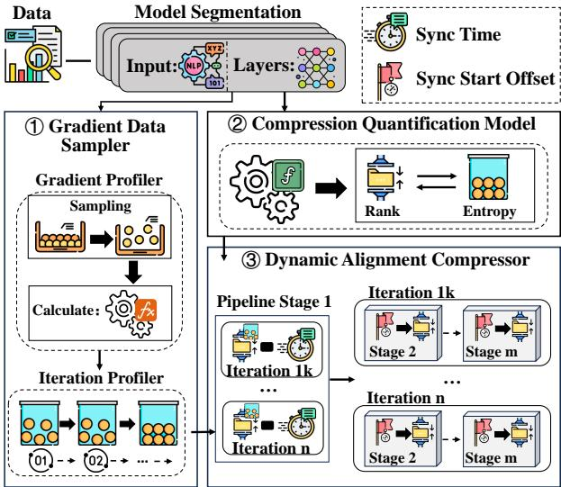
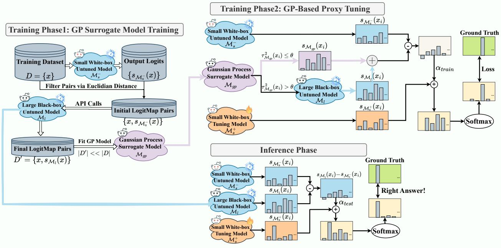
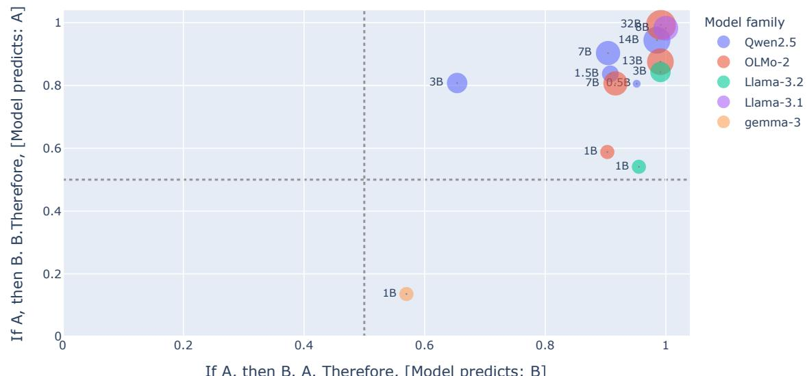
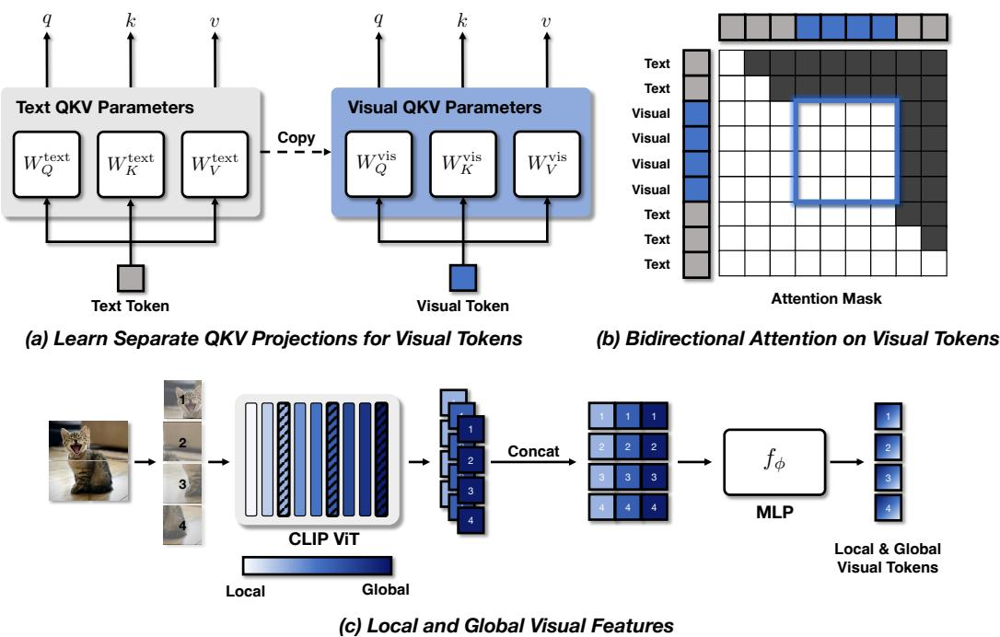

微观深度解读
为您精选了 6 篇高质量 AI 论文的深度解析
#1
大型语言模型
指令遵循
强化学习
评分标准
基准测试
简介：本文提出了AdvancedIF基准，包含1600多个复杂指令提示和评分标准，旨在评估大型语言模型（LLM）在复杂指令遵循方面的能力。同时，提出了RIFL（基于评分的指令遵循学习）后期训练流程，通过强化学习提升LLM的指令遵循能力，显著提高了模型性能，验证了评分标准在训练和评估中的有效性。

#2
动态梯度压缩
大规模语言模型
通信效率
计算资源
训练效率
简介：本文提出了一种名为EDGC（Entropy-Driven Dynamic Gradient Compression）的动态梯度压缩框架，旨在解决大规模语言模型（LLM）训练中的通信效率低下和计算资源开销问题。EDGC通过监测梯度熵的变化，动态调整压缩率，从而显著降低通信延迟和训练时间，同时保持模型性能。实验结果表明，该方法在不同规模的模型上有效提升了训练效率，最大通信延迟降低46.45%。

#3
黑箱调优
大型语言模型
高斯过程
API调用
资源受限环境
简介：本文提出了一种名为GP-filter的高效黑箱调优框架，旨在解决在无法直接访问大型语言模型（LLM）参数时的调优问题。通过训练高斯过程（GP）代理模型，仅使用少量高信息量的数据进行API查询，显著降低了API调用频率至1.38%，同时将模型准确率从55.92%提升至86.85%。该方法有效平衡了调优成本与性能，适用于资源受限环境。

#4
大型语言模型
非功能质量特性
质量保证
代码生成
性能效率
简介：本文提出了一种综合框架，系统评估和提升大型语言模型（LLM）生成代码的非功能质量特性（NFQCs），如安全性、可维护性和性能效率。通过文献回顾、行业研讨会和实证研究，揭示了LLM在NFQCs方面的不足，并强调了学术界与行业关注点的差异。研究结果显示，优化某一质量维度可能牺牲其他维度，呼吁在代码生成流程中整合质量保证机制。

#5
大型语言模型
推理能力
方法论分析
评估标准
指令微调
简介：本文提出了一种批判性的方法论分析，揭示了基础大型语言模型（LLMs）推理能力评估中的根本性缺陷，特别是模型优化目标与评估标准之间的不匹配。研究强调，基础LLMs的推理输出往往是语言模式的偶然结果，而非真实的逻辑推导，呼吁未来研究应聚焦于指令微调LLMs，以更准确地评估推理能力。

#6
多模态大语言模型
视觉信息处理
LLaViT框架
双向注意力机制
视觉特征融合
简介：本文提出了LLaViT框架，通过三项关键修改（独立视觉QKV投影、双向注意力机制和多层次视觉特征融合），有效解决了现有多模态大语言模型在视觉信息整合中的不足。实验结果显示，LLaViT在多个基准测试中显著超越了LLaVA模型，展现出更高的性能和参数效率。
